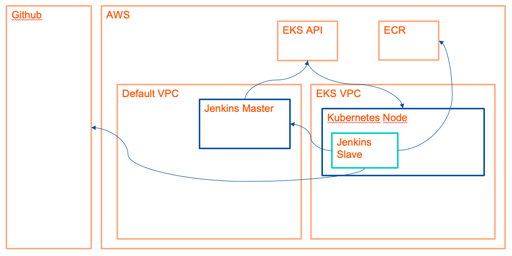

Docker Security with Kaniko (1 hour)
Interacting with the Docker engine directly through the docker command line tool can impose a significant security thread.
In order to improve this risk and limit access to the Docker engine, there are several projects that allow building Docker images without a Docker engine. One of them is kaniko, which you will use to build and push a Docker image to ECR.
We will use Jenkins and our previously created EKS cluster in order to build highly secure and scalable build system.
As the setup will be rather complex, before we begin, please have a look at the following graphic that will visualize our final setup:

To do so, please follow these steps:
-
Create an Elastic Container Repository Repository
- Go to the AWS Console and open the ECR menu (by searching for Elastic Container Registry)
- Click on "Create repository"
- Enter "juice-shop" and click on "Create Repository"
-
Add new permissions to your EKS Node Group
- Go to the AWS Console and open the IAM menu
- Go to Roles
- Search for "NodeInstanceRole"
- Select the NodeInstanceRole and click the button "Attach policies"
- Search for "Container"
- Check "AmazonEC2ContainerRegistryPowerUser"
- Click on "Attach Policy"
-
Create an IAM Role for your Jenkins EC2 Instance
- Go to your AWS Console and open the IAM menu
- Go to Roles
- Click on "Create role"
- Click on "EC2" and confirm with "Next: Permissions"
- Click on "Next: Tags"
- Click on "Next: Review"
- Give it the name "role-jenkins-master"
- Go to the EC2 menu
- Select your Jenkins EC2 instance and click on "Actions" -> "Instance Settings" -> "Attach/Replace IAM Role" and select the previously created role from the drop-down menu.
-
Update the aws-auth ConfigMap in your EKS cluster
-
From your workstation, enter the following command:
kubectl edit cm aws-auth -n kube-systemand add the following entry to the mapRoles section:
- groups: - system:masters rolearn: arn:aws:iam::XXXXXXXXXXXX:role/role-jenkins-master username: system:node:{{EC2PrivateDNSName}}where XX... is your AWS Account ID
For your information, the AWS Account ID can be found in the IAM Menu on the bottom left corner, where it's written "AWS account ID" (a 12 digit number).
-
-
Update your Jenkins Security Group
- In the EC2 Console, open the security group that you assigned to your Jenkins EC2 Instance
- Allow requests on port 8080 and 50000 from anywhere (Attention, this is not best practice and we only do this for the purpose of the course)
-
Create a new kubeconfig and upload it to the Jenkins Kubernetes Plugin
-
In your workstation, enter the following command:
aws eks update-kubeconfig --kubeconfig config-for-jenkins --name isenA new file with the name "config-for-jenkins" will be created in your current directory. You'll need it in the next step.
-
-
Install the Jenkins Kubernetes Plugin
- In your Jenkins, go to "Settings" and select "Manage plugins".
- Click on the tab "Available" and search for "Kubernetes plugin"
- Check it and click "Install". In the next screen, select to restart Jenkins after installation.
-
Configure the Kubernetes Plugin
- In Jenkins, go "Settings" and select "Manage nodes"
- Click on "Configure Clouds"
- Click on "Add cloud" and select "Kubernetes".
- Click on "Kubernetes Cloud details..."
- In Kubernetes namespace, enter "default"
- Next to Credentials, click on "Add" and select "Jenkins".
- As Kind, choose "Secret file" and in the file row, upload the file
config-for-jenkinsfile that you created in step 5 - Confirm with "Add" and choose the uploaded file as credential.
- Check the field "Direct connection".
- Click on "Save".
-
Configure the Jenkins Agent Port
- In Jenkins, go "Settings" and select "Global Security Settings".
- In the section "Agents", select the "Fixed" option and enter 50000 as value.
-
Create a docker-config ConfigMap in Kubernetes
-
Save the following file as
docker-config.yamlon your PC:apiVersion: v1 kind: ConfigMap metadata: name: docker-config data: config.json: |- { "credHelpers": { "XXXXXXXXXXXX.dkr.ecr.us-east-1.amazonaws.com": "ecr-login" } } -
Replace XX... with your AWS Account ID
- Create this file in your Kubernetes cluster by entering:
kubectl create -f docker-config.yaml
-
After all these steps are done, you can create a pipeline with the example below:
pipeline {
agent {
kubernetes {
//cloud 'kubernetes'
yaml """
kind: Pod
metadata:
name: kaniko
spec:
containers:
- name: kaniko
image: gcr.io/kaniko-project/executor:debug-539ddefcae3fd6b411a95982a830d987f4214251
imagePullPolicy: Always
command:
- cat
tty: true
volumeMounts:
- name: docker-config
mountPath: /kaniko/.docker
volumes:
- name: docker-config
configMap:
name: docker-config
"""
}
}
stages {
stage('Build with Kaniko') {
steps {
git 'https://github.com/<your-github-username>/juice-shop'
container(name: 'kaniko') {
sh '''
/kaniko/executor --dockerfile `pwd`/Dockerfile --context `pwd` --destination=XXXXXXXXXXXX.dkr.ecr.us-east-1.amazonaws.com/juice-shop:latest --destination=XXXXXXXXXXXX.dkr.ecr.us-east-1.amazonaws.com/juice-shop:v$BUILD_NUMBER
'''
}
}
}
}
}
Please replace XX... with your AWS Account ID.
Bonus task: Deploy this new container image in your EKS cluster.
Files that you need to deploy (with kubectl apply -f <file.yaml>):
You need to replace your pipeline to take the deployment into account. An example pipeline can be found here: